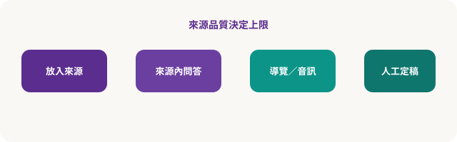

Part 07–08 · NotebookLM
來源導向的第二大腦：問答、音訊概覽、簡報
NotebookLM 的核心差異：先放入你提供的來源，再對話、做導覽與產出。適合教材包、會議資料、專題文獻——與「開放網聊」的 Gemini 互補。
工作流對照

適合
指定 PDF／筆記範圍內問答、產生學習導覽、音訊複習、簡報骨架。
注意
來源品質決定上限；未放入的內容不該被當成「筆記本已證明」。
實體課建議練習
- 新建筆記本，上傳 2–3 份已授權課堂 PDF 或自寫 Markdown。
- 先問「用條列總結各來源立場差異」，檢查是否出現來源外事實。
- 產生學習導覽／常見問答，學員兩兩互問「哪一句找不到出處」。
- 嘗試音訊概覽或簡報大綱，再人工改成可上台版本。
著作權：不要把整本未授權商業書掃進去當公開分享筆記本。本課程消化站亦僅提供教學摘要。
隨堂測驗 · C5Q1
NotebookLM 相對一般聊天 AI 的關鍵差異是？
隨堂測驗 · C5Q2
發現回答似乎超出已上傳來源時，應？
隨堂測驗 · C5Q3
課堂上使用 NotebookLM 的合規做法是？